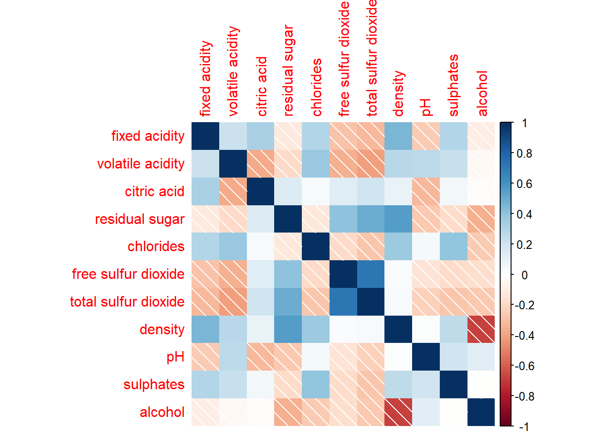
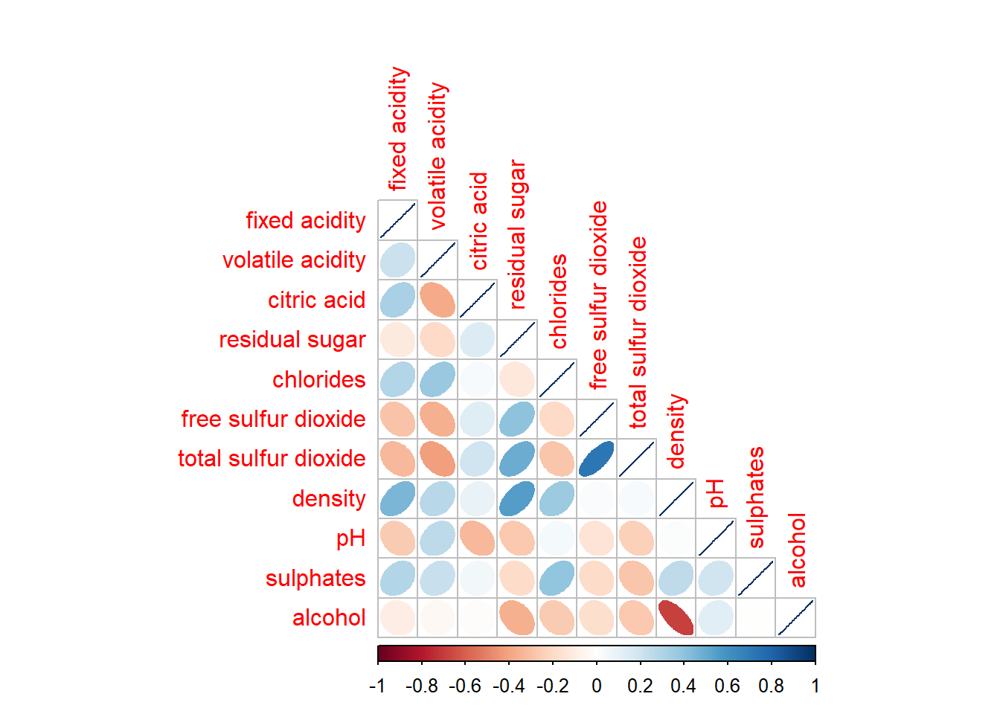

pacman::p_load(tidyverse, ggstatsplot,corrplot)Hands-on Exercise 5b
Visual Correlation Analysis
1 Overview
Correlation coefficient is a popular statistic that use to measure the type and strength of the relationship between two variables. The values of a correlation coefficient ranges between -1.0 and 1.0, revealing different relationships:
- 1 shows a perfect linear relationship between the two variables
- -1.0 shows a perfect inverse relationship between the two variables
- 0.0 shows no linear relationship between the two variables
The correlation coefficeints of the pair comparisons are displayed in correlation matrix or scatterplot matrix. There are three broad reasons for computing a correlation matrix.
- To reveal the relationship between high-dimensional variables pair-wisely.
- To input into other analyses. For example, people commonly use correlation matrices as inputs for exploratory factor analysis, confirmatory factor analysis, structural equation models, and linear regression when excluding missing values pairwise.
- As a diagnostic when checking other analyses. For example, with linear regression a high amount of correlations suggests that the linear regression’s estimates will be unreliable.
1.1 Loading R packages
1.2 Importing Data
In this hands-on exercise, the Wine Quality Data Set of UCI Machine Learning Repository will be used.
wine <- read_csv("data/wine_quality.csv")Rows: 6497 Columns: 13
── Column specification ────────────────────────────────────────────────────────
Delimiter: ","
chr (1): type
dbl (12): fixed acidity, volatile acidity, citric acid, residual sugar, chlo...
ℹ Use `spec()` to retrieve the full column specification for this data.
ℹ Specify the column types or set `show_col_types = FALSE` to quiet this message.Let us first started by examining the data table.
head(wine,5)# A tibble: 5 × 13
`fixed acidity` `volatile acidity` `citric acid` `residual sugar` chlorides
<dbl> <dbl> <dbl> <dbl> <dbl>
1 7.4 0.7 0 1.9 0.076
2 7.8 0.88 0 2.6 0.098
3 7.8 0.76 0.04 2.3 0.092
4 11.2 0.28 0.56 1.9 0.075
5 7.4 0.7 0 1.9 0.076
# ℹ 8 more variables: `free sulfur dioxide` <dbl>,
# `total sulfur dioxide` <dbl>, density <dbl>, pH <dbl>, sulphates <dbl>,
# alcohol <dbl>, quality <dbl>, type <chr>str(wine)spc_tbl_ [6,497 × 13] (S3: spec_tbl_df/tbl_df/tbl/data.frame)
$ fixed acidity : num [1:6497] 7.4 7.8 7.8 11.2 7.4 7.4 7.9 7.3 7.8 7.5 ...
$ volatile acidity : num [1:6497] 0.7 0.88 0.76 0.28 0.7 0.66 0.6 0.65 0.58 0.5 ...
$ citric acid : num [1:6497] 0 0 0.04 0.56 0 0 0.06 0 0.02 0.36 ...
$ residual sugar : num [1:6497] 1.9 2.6 2.3 1.9 1.9 1.8 1.6 1.2 2 6.1 ...
$ chlorides : num [1:6497] 0.076 0.098 0.092 0.075 0.076 0.075 0.069 0.065 0.073 0.071 ...
$ free sulfur dioxide : num [1:6497] 11 25 15 17 11 13 15 15 9 17 ...
$ total sulfur dioxide: num [1:6497] 34 67 54 60 34 40 59 21 18 102 ...
$ density : num [1:6497] 0.998 0.997 0.997 0.998 0.998 ...
$ pH : num [1:6497] 3.51 3.2 3.26 3.16 3.51 3.51 3.3 3.39 3.36 3.35 ...
$ sulphates : num [1:6497] 0.56 0.68 0.65 0.58 0.56 0.56 0.46 0.47 0.57 0.8 ...
$ alcohol : num [1:6497] 9.4 9.8 9.8 9.8 9.4 9.4 9.4 10 9.5 10.5 ...
$ quality : num [1:6497] 5 5 5 6 5 5 5 7 7 5 ...
$ type : chr [1:6497] "red" "red" "red" "red" ...
- attr(*, "spec")=
.. cols(
.. `fixed acidity` = col_double(),
.. `volatile acidity` = col_double(),
.. `citric acid` = col_double(),
.. `residual sugar` = col_double(),
.. chlorides = col_double(),
.. `free sulfur dioxide` = col_double(),
.. `total sulfur dioxide` = col_double(),
.. density = col_double(),
.. pH = col_double(),
.. sulphates = col_double(),
.. alcohol = col_double(),
.. quality = col_double(),
.. type = col_character()
.. )
- attr(*, "problems")=<externalptr> 1.3 Building Correlation Matrix: pairs() method
In this section, we learn to create scatterplot matrix by using the pairs function of R Graphics.
Columns 1 to 11 of wine dataframe is used to build the scatterplot matrix.
pairs(wine[,1:11])
pairs(wine[,2:12], upper.panel = NULL)
pairs(wine[,2:12], lower.panel = NULL)
To show the correlation coefficient of each pair of variables instead of a scatter plot, panel.cor function will be used.
panel.cor <- function(x, y, digits=2, prefix="", cex.cor, ...) {
usr <- par("usr")
on.exit(par(usr))
par(usr = c(0, 1, 0, 1))
r <- abs(cor(x, y, use="complete.obs"))
txt <- format(c(r, 0.123456789), digits=digits)[1]
txt <- paste(prefix, txt, sep="")
if(missing(cex.cor)) cex.cor <- 0.8/strwidth(txt)
text(0.5, 0.5, txt, cex = cex.cor * (1 + r) / 2)
}
pairs(wine[,2:12],
upper.panel = panel.cor)
1.4 Visualising Correlation Matrix: ggcormat()
In this section, we learn how to visualising correlation matrix by using ggcorrmat() of ggstatsplot package.
These are some other R packages that provide function to plot corrgram:
This is how a basic correlation matrix look like when using ggcorrmat(), for further modification, check out next tab.
ggstatsplot::ggcorrmat(
data = wine,
cor.vars = 1:11)
ggstatsplot::ggcorrmat(
data = wine,
cor.vars = 1:11,
ggcorrplot.args = list(outline.color = "grey80",
hc.order = TRUE,
tl.cex = 9,
lab_size = 3,
lab_col = "grey30",
pch.cex = 8,
pch.col = "grey40"),
pch = "square cross",
colors = c("red", "white", "#0072B2"),
title = "Correlogram for wine dataset",
subtitle = "Four pairs are no significant at p < 0.05"
) +
theme(legend.text = element_text(size = 8),
legend.title = element_text(size =12),
plot.title=element_text(size= 14))More information related to ggcorrmat() can be found here and here.
1.5 Building multiple plots using grouped_ggcorrmat()
Instea of ggcorrmat(), we use grouped_ggcorrmat() of ggstatsplot to create multiple plots.
grouped_ggcorrmat(
data = wine,
cor.vars = 1:11,
grouping.var = type,
type = "robust",
p.adjust.method = "holm",
plotgrid.args = list(ncol = 2),
ggcorrplot.args = list(outline.color = "black",
hc.order = TRUE,
tl.cex = 6,
lab_size = 2),
colors = c("red", "white", "#0072B2"),
annotation.args = list(
tag_levels = "a",
title = "Correlogram for wine dataset",
subtitle = "The measures are: alcohol, sulphates, fixed acidity, citric acid, chlorides, residual sugar, density, free sulfur dioxide and volatile acidity",
caption = "Dataset: UCI Machine Learning Repository"
)
)+
theme(legend.position = "bottom")Things to learn from the code chunk above
- to build a facet plot, the only argument needed is
grouping.var. - Behind group_ggcorrmat(), patchwork package is used to create the multiplot.
plotgrid.argsargument provides a list of additional arguments passed to patchwork::wrap_plots, except for guides argument which is already separately specified earlier. - Likewise,
annotation.argsargument is calling plot annotation arguments of patchwork package.
1.6 Visualising Correlation Matrix using corrplot Package
Refer to An Introduction to corrplot Package in order to gain basic understanding of corrplot package.
In the code chunk below, cor() of R Stats is used to compute the correlation matrix of wine data frame.
wine.cor <- cor(wine[, 1:11])1.6.1 Basic plot using corrplot()
corrplot() is used to plot the corrgram by using all the default setting as shown in the code chunk below.
corrplot(wine.cor)
Currently, corrplot() offer 7 visualization methods, named “circle”, “square”, “ellipse”, “number”, “pie”, “shade” and “color”
corrplot(wine.cor,
method = "ellipse") 
corrplot(wine.cor,
method = "shade") 
plot “full” matrix or just “upper” or “lower” triangular part of it.
corrplot(wine.cor,
method = "ellipse",
type="lower")
The default layout of the corrgram can be further customised.
corrplot(wine.cor,
method = "ellipse",
type="lower",
diag = FALSE,
tl.col = "black",
tl.cex = 0.8)Arguments
diag - to turn off the diagonal cells
tl.col - to change the axis text label colour to black colour
tl.cex - to adjust the title label size
1.6.2 Mixed layout using corrplot.mixed()
In this section, we learn to use mixed methods to visualize a correlation matrix by using corrplot.mixed(). We use lower and upper to specify the method from any of the 7 visualization methods, named “circle”, “square”, “ellipse”, “number”, “pie”, “shade” and “color”.
corrplot.mixed(wine.cor,
lower = "square",
upper = "number",
tl.pos = "lt",
diag = "l",
tl.col = "black",
tl.cex = 0.8,
number.cex = 0.7)1.6.3 Combining corrgram with the significant test
With corrplot package, we can use the cor.mtest() to compute the p-values and confidence interval for each pair of variables.
wine.sig = cor.mtest(wine.cor, conf.level= .95)We can then use the p.mat argument of corrplot function as shown in the code chunk below.
corrplot(wine.cor,
method = "number",
type = "lower",
diag = FALSE,
tl.col = "black",
tl.srt = 45,
p.mat = wine.sig$p,
sig.level = .05,
tl.cex = 0.8,
number.cex = 0.7)
Note
Numbers shows in corrgram is correlation coefficient. Not p-value!
1.6.4 Reorder a corrgram
Matrix reorder is very important for mining the hiden structure and pattern in a corrgram. By default, the order of attributes of a corrgram is sorted according to the correlation matrix (i.e. “original”). Currently, corrplot package support four sorting methods, they are:
AOE- the angular order of the eigenvectors. See Michael Friendly (2002) for details.FPC- first principal component order.hclust- hierarchical clustering order, and “hclust.method” for the agglomeration method to be used.- “hclust.method” should be one of “ward”, “single”, “complete”, “average”, “mcquitty”, “median” or “centroid”.
alphabetfor alphabetical order.
The order above can be applied to corrplot() and corrplot.mixed().
corrplot.mixed(wine.cor,
lower = "square",
upper = "number",
tl.pos = "lt",
diag = "l",
tl.col = "black",
tl.cex = 0.8,
number.cex = 0.7,
order = "AOE")corrplot(wine.cor,
method = "ellipse",
type="lower",
diag = FALSE,
tl.col = "black",
tl.cex = 0.8,
order = "AOE")Using hclust, corrplot() can draw rectangles around the corrgram based on the results of hierarchical clustering.
corrplot(wine.cor,
method = "ellipse",
tl.pos = "lt",
tl.col = "black",
order="hclust",
hclust.method = "average",
addrect = 3)